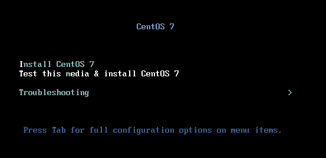
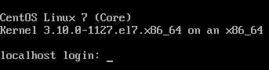

Linux学习笔记（上）
一、简介
Linux，全称GNU/Linux，是一套免费使用和自由传播的类UNIX操作系统，其内核由林纳斯·本纳第克特·托瓦兹于1991年第一次释出，它主要受到Minix和Unix思想的启发，是一个基于POSIX和Unix的多用户、多任务、支持多线程和多CPU的操作系统。它能运行主要的Unix工具软件、应用程序和网络协议。它支持32位和64位硬件。Linux继承了Unix以网络为核心的设计思想，是一个性能稳定的多用户网络操作系统。
Linux也是Linux is not Unix的递归缩写。
本文基于Linux的发行版之一：CentOS来介绍，所以先了解下什么是Linux的发行版
1、Linux发行版
Linux 主要作为Linux发行版（distro）的一部分而使用。这些发行版由个人，松散组织的团队，以及商业机构和志愿者组织编写。它们通常包括了其他的系统软件和应用软件，以及一个用来简化系统初始安装的安装工具，和让软件安装升级的集成管理器。大多数系统还包括了像提供GUI界面的XFree86之类的曾经运行于BSD的程序。 一个典型的Linux发行版包括：Linux内核，一些GNU程序库和工具，命令行shell，图形界面的X Window系统和相应的桌面环境，如KDE或GNOME，并包含数千种从办公套件，编译器，文本编辑器到科学工具的应用软件。
简单来说发行版就是把Linux内核与一些应用软件做的一个打包集合

Linux有上百种不同的发行版，如基于社区开发的debian、archlinux，和基于商业开发的Red Hat Enterprise Linux、SUSE、oracle linux等。

2、CentOS
CentOS（Community Enterprise Operating System，社区企业操作系统）是Linux发行版之一，它是来自于Red Hat Enterprise Linux依照开放源代码规定释出的源代码所编译而成。由于出自同样的源代码，因此有些要求高度稳定性的服务器以CentOS替代商业版的Red Hat Enterprise Linux使用。两者的不同，在于CentOS完全开源。
二、安装
因为Linux是操作系统，我们很难抛弃个人电脑原来使用的Windows系统而去重装一个不熟悉的Linux系统，而装双系统操作较繁琐，所以可选方案是将Linux装进虚拟机或者是直接购买云服务器（推荐，更接近实际工作场景）
1、虚拟机
下载
虚拟机：使用的是VMware14Pro，如何下载安装自行了解，这里不另行说明
CentOS：在官网下载或者是使用阿里云的镜像站，这里使用的是版本7，路径在/centos/7.8.2003/isos/x86_64/，各iso文件的区别在0_README.txt文件里有说明，点击CentOS-7-x86_64-DVD-2003.iso下载
详细安装步骤
选择下载好的iso文件
选择安装位置
1核1G即可

选择网络类型
默认推荐的即可
安装完后实际占用空间大概1.6G，这里决定的是磁盘最大空间。不经常移动虚拟机文件可以选择存储为单个文件
选择自定义硬件，把CPU虚拟化引擎的第一项打开
最后点击完成，自动启动虚拟机，使用方向键选择第一项按回车开始安装

进入初始化界面，鼠标拉到最下方选择中文，点击继续
点安装位置，其它都不用动，默认自动分区即可，左上角点击完成
然后选择网络和主机名，打开网络连接，可以选择设置主机名
然后开始安装，此时可以设置root账号的密码，如果设置简单的密码需要点两次完成来确认。
最后点击完成配置，补充配置完成后点击重启，自动重启虚拟机
登录
此时进入命令行操作界面，输入管理员账号root和之前设置的密码来登录。输入密码时不会显示字符

2、云服务器
购买
国内云服务器大厂：腾讯云和阿里云。可以在最新活动里看到比较优惠的套装
个人使用的，目前比较推荐腾讯云
购买后会给你注册时的邮箱发送通知邮件，里面有初始密码和ip信息
可以在腾讯云的控制台→云服务器→实例里修改密码，同时也会发送通知邮件
安全组
安全组是一种虚拟防火墙，具备有状态的数据包过滤功能，用于设置云服务器、负载均衡、云数据库等实例的网络访问控制，控制实例级别的出入流量，是重要的网络安全隔离手段。
您可以通过配置安全组规则，允许或禁止安全组内的实例的出流量和入流量。
需要注意的是：默认的安全组
- 入站规则放行所有IPv4地址（
0.0.0.0/0）的所有端口，禁止所有IPv6地址（::/0）的所有端口 - 出站规则放行所有IPv4地址（
0.0.0.0/0）、所有IPv6地址（::/0）的所有端口
同时安全组的优先级是从上到下
不怕被攻击的话默认的安全组设置就行了
具体介绍在安全组帮助文档都有说明，不同供应商的设置都是大同小异的
3、远程登录
本地虚拟机的命令行操作多有不便，而云服务器又不可能去实地操作，所以就需要使用SSH来进行远程登录
SSH 为 Secure Shell 的缩写，由 IETF 的网络小组（Network Working Group）所制定；SSH 为建立在应用层基础上的安全协议。SSH 是较可靠，专为远程登录会话和其他网络服务提供安全性的协议。
在Windows系统上，这里使用的是Xshell。设置好登录之后会话界面如下
登录后，光标闪烁前默认的字符类似这样[root@VM-0-7-centos ~]#
其中@符号前表示当前登录的用户名，后面表示主机名，空格后面是当前的位置，~表示用户目录，对于root用户来说是/root，相当于Windows系统的C:\Users\Administrator。#是命令提示符，非root用户是$
三、基本目录结构
Linux是基于文件的操作系统，万物皆文件（Anything Is File）。它的根目录用/表示，使用ls /命令查看根目录下的文件夹
1 | [root@VM-0-7-centos ~]# ls / |
一些主要目录的说明

其它目录：
- /data：通常用来存放数据
- /lost+found：一般情况下是空的，当系统非正常情况关机后，这里就存放了一些文件。
- /proc：一个虚拟的目录，它是系统内存的映射，可以通过直接访问这个目录来获取系统信息。这个目录的内容不在硬盘上而是在内存里
- /run：一个临时文件系统，存储系统启动以来的信息。当系统重启时，这个目录下的文件应该被删掉或清除
- /srv：该目录存放一些服务启动之后需要提取的数据。
- /media：自动识别的设备挂载目录，例如U盘、光驱等等，当识别后，linux会把识别的设备挂载到这个目录下。
- /opt：额外安装软件所存放的目录
- /sys：sysfs文件系统，可以理解成硬件设备的驱动程序信息
四、文件与目录相关命令
1、改变（切换）目录
-
cd：（Change Directory）目录名可以使用绝对路径（在linux中以
/开头）或相对路径，当前目录.上级目录..用户目录~cd 进入用户主目录；
cd ~ 进入用户主目录；
cd - 返回进入此目录之前所在的目录；
cd … 返回上级目录（若当前目录为“/“，则执行完后还在“/"）；
cd …/… 返回上两级目录；
cd !$ 把上个命令的参数作为cd参数使用。
2、列出目录内容
-
ls：（list）用来显示目标列表，在Linux中是使用率较高的命令。它的输出信息可以进行彩色加亮显示，以区分不同类型的文件（夹）
一些选项：
-a：显示所有档案及目录（ls内定将档案名或目录名称为“.”的视为隐藏，不会列出）；
-A：显示除隐藏文件“.”和“…”以外的所有文件列表；
-C：多列显示输出结果。这是默认选项；
-d：仅显示目录名，而不显示目录下的内容列表。显示符号链接文件本身，而不显示其所指向的目录列表；
-k：以KB（千字节）为单位显示文件大小；
-l：以长格式显示目录下的内容列表。（详细信息）
-m：用“,”号区隔每个文件和目录的名称；
-r：以文件名反序排列并输出目录内容列表；
-s：显示文件和目录的大小，以区块为单位；
-t：用文件和目录的更改时间排序；
-L：如果遇到性质为符号链接的文件或目录，直接列出该链接所指向的原始文件或目录；
-R：递归处理，将指定目录下的所有文件及子目录一并处理；
–full-time：列出完整的日期与时间；
3、显示当前目录
- pwd：（Print working directory）以绝对路径的方式显示用户当前工作目录
1 | [root@VM-0-7-centos ~]# pwd |
4、创建目录
-
mkdir：（Make directory）用来创建目录。如果在目录名的前面没有加任何路径名，则在当前目录下创建指定的目录；如果给出了一个已经存在的路径，将会在该目录下创建一个指定的目录。在创建目录时，应保证新建的目录与它所在目录下的文件没有重名。
-p或–parents 若所要建立目录的上层目录目前尚未建立，则会一并建立上层目录
5 、删除目录
-
rmdir：（Remove directory）用来删除空目录，可以从一个目录中删除一个或多个空的子目录
-p或–parents：删除指定目录后，若该目录的上层目录已变成空目录，则将其一并删除
6、复制
-
cp：（Copy）用来将一个或多个源文件或者目录复制到指定的目的文件或目录。它可以将单个源文件复制成一个指定文件名的具体的文件或一个已经存在的目录下。cp命令还支持同时复制多个文件，当一次复制多个文件时，目标文件参数必须是一个已经存在的目录，否则将出现错误。
选项：
-f：强行复制文件或目录，不论目标文件或目录是否已存在
-i：覆盖既有文件之前先询问用户
-R或-r：递归处理，将指定目录下的所有文件与子目录一并处理
7、删除
-
rm：（Remove）删除一个目录中的一个或多个文件或目录，也可以将某个目录及其下属的所有文件及其子目录均删除掉
选项：
-f：强制删除文件或目录
-i：删除已有文件或目录之前先询问用户
-r或-R：递归处理，将指定目录下的所有文件与子目录一并处理
Linux的rm命令没有Windows回收站那样的机制，所以使用时需要十分小心
注意：使用rm命令要格外小心。因为一旦删除了一个文件，就无法再恢复它。所以，在删除文件之前，最好再看一下文件的内容，确定是否真要删除。rm命令可以用-i选项，这个选项在使用文件扩展名字符删除多个文件时特别有用。使用这个选项，系统会要求你逐一确定是否要删除。这时，必须输入y并按Enter键，才能删除文件。如果仅按Enter键或其他字符，文件不会被删除。
rm -rf /*删库跑路
8、移动和重命名
-
mv：（Move）用来对文件或目录重新命名，或者将文件从一个目录移到另一个目录中
选项：
-b：当文件存在时，覆盖前，为其创建一个备份
-f：若目标文件或目录与现有的文件或目录重复，则直接覆盖现有的文件或目录；
-i：交互式操作，覆盖前先行询问用户，如果源文件与目标文件或目标目录中的文件同名，则询问用户是否覆盖目标文件。用户输入”y”，表示将覆盖目标文件；输入”n”，表示取消对源文件的移动。这样可以避免误将文件覆盖。
-u：当源文件比目标文件新或者目标文件不存在时，才执行移动操作。
五、文件属性与权限管理
1、基本属性
Linux系统是一种典型的多用户系统，不同的用户处于不同的地位，拥有不同的权限。为了保护系统的安全性，Linux系统对不同的用户访问同一文件（包括目录文件）的权限做了不同的规定。
使用ls -l或ll命令来查看当前目录下的详细信息。列的类型依次是：
基本属性、文件硬链接数（包含的文件数量）、从属用户、从属组、文件所占用的空间(以字节为单位)、文件（目录）最近访问（修改）时间、文件名（如果是符号链接，那么会用->指向实际的文件路径，类似Windows的快捷方式）
1 | [root@VM-0-7-centos /]# ls -l |
第一列的属性有10个字符长度，分为了4个区域

第一个字符有下面几类
- [ d ]表示目录
- [ - ]表示文件；
- [ l ]表示链接文档(link file)；
- [ b ]表示设备文件里面的可供储存的接口设备(可随机存取装置)；
- [ c ]表示设备文件里面的串行端口设备，例如键盘、鼠标(一次性读取装置)。
后面字符以三个为一组，且均为rwx三个参数的组合。[ r ]代表可读(read)、[ w ]代表可写(write)、[ x ]代表可执行(execute)，减号[ - ]表示没有相应权限。 要注意的是，这三个权限的位置不会改变。
2、文件从属
对于文件来说，它都有一个特定的所有者，也就是对该文件具有所有权的用户。
同时，在Linux系统中，用户是按组分类的，一个用户属于一个或多个组。
文件所有者以外的用户又可以分为文件所有者的同组用户和其他用户。
因此，Linux系统按文件所有者(属主)、文件所有者同组用户（属组）和其他用户来规定了不同的文件访问权限。
对于 root 用户来说，一般情况下，文件的权限对其不起作用（最高权限者可以修改权限）。
以下三个命令通用的选项：-R或–recursive：递归处理，将指令目录下的所有文件及子目录一并处理
2.1 改变属组
- chgrp：（Change group）该命令用来改变指定文件所属的用户组。如果用户不是该文件的文件主或超级用户(root)，则不能改变该文件的组。
2.2 改变属主
- chown：（Change owner）改变某个文件或目录的所有者和所属的组，只有文件主和超级用户才可以便用该命令。
3、权限更改
- chmod（Change mode）变更文件或目录的权限
在UNIX系统家族里，文件或目录权限的控制分别以读取、写入、执行3种一般权限来区分，另有3种特殊权限可供运用。用户可以使用chmod指令去变更文件与目录的权限，设置方式采用文字或数字代号皆可。符号连接的权限无法变更，如果用户对符号连接修改权限，其改变会作用在被连接的原始文件。
权限范围的表示法如下：
u User，文件或目录的拥有者；
g Group，文件或目录的所属群组；
o Other，除了文件或目录拥有者或所属群组之外，其他用户皆属于这个范围；
a All，全部的用户，包含拥有者，所属群组以及其他用户；
r 读取权限，数字代号为“4”;
w 写入权限，数字代号为“2”；
x 执行或切换权限，数字代号为“1”；
- 不具任何权限，数字代号为“0”；
s 特殊功能说明：变更文件或目录的权限。
常用数字代号表示，每种身份(owner/group/others)各自的三个权限(r/w/x)分数是累加的，例如当权限为： [-rwxrwx—] 时分数则是：
- owner = rwx = 4+2+1 = 7
- group = rwx = 4+2+1 = 7
- others= — = 0+0+0 = 0
六、查看文件内容
-
cat：（concatenate）按从上到下的循序显示全部文件内容，本意是连接文件并打印到标准输出设备上
使用例子：
cat m1 （在屏幕上显示文件ml的内容）
cat m1 m2 （同时显示文件ml和m2的内容）
cat m1 m2 > file （将文件ml和m2合并后放入文件file中） -
tac：和cat相反的循序显示
-
nl：（Number of Lines） 显示的时候输出行号
-
more ：以全屏幕的方式按页显示文本文件的内容。more命令中内置了若干快捷键，常用的有H（获得帮助信息），Enter（向下翻滚一行），空格（向下滚动一屏），Q（退出命令）
-
less：与 more 类似，不同的是less命令可以向前或向后浏览文件，而more命令只能向前浏览。用less命令显示文件时，用PageUp键向上翻页，用PageDown键向下翻页。按Q键退出less程序。
-
head：用于显示文件的开头的内容。在默认情况下，head命令显示文件的头10行内容。可以使用选项-n<数字>来指定显示头部内容的行数或-c<字符数>指定显示头部内容的字符数
-
tail：和head类似，用于显示文件的尾部内容，默认也是10行
七、文件链接
Linux具有为一个文件起多个名字的功能，称为链接。被链接的文件可以存放在相同的目录下，但是必须有不同的文件名，而不用在硬盘上为同样的数据重复备份。另外，被链接的文件也可以有相同的文件名，但是存放在不同的目录下，这样只要对一个目录下的该文件进行修改，就可以完成对所有目录下同名链接文件的修改。对于某个文件的各链接文件，我们可以给它们指定不同的存取权限，以控制对信息的共享和增强安全性。
Linux 的文件链接分为两种，一种是硬链接（Hard Link），另一种是符号链接（Symbolic Link），也叫软链接
1、硬链接
建立硬链接时，在另外的目录或本目录中增加目标文件的一个目录项，这样，一个文件就登记在多个目录中。如上图所示的m2.c文件就在目录mub1和liu中都建立了目录项。
创建硬链接后，己经存在的文件的I节点号（Inode）会被多个目录文件项使用。一个文件的硬链接数可以在目录的长列表格式的第二列中看到，无额外链接的文件的链接数为l。
硬链接有如下限制：
- 不能对目录文件做硬链接。
- 不能在不同的文件系统之间做硬链接。就是说，链接文件和被链接文件必须位于同一个文件系统中。
2、符号链接
符号链接也称为软链接，是将一个路径名链接到一个文件。这些文件是一种特别类型的文件。事实上，它只是一个文本文件（如图中的abc文件），其中包含它提供链接的另一个文件的路径名，如图中虚线箭头所示。另一个文件是实际包含所有数据的文件。所有读、写文件内容的命令被用于符号链接时，将沿着链接方向前进来访问实际的文件。
符号链接的机制基本上类似于Windows的快捷方式
与硬链接不同的是，符号链接确实是一个新文件，当然它具有不同的I节点号；而硬链接并没有建立新文件。
符号链接没有硬链接的限制，可以对目录文件做符号链接，也可以在不同文件系统之间做符号链接。
符号链接保持了链接与源文件或目录之间的区别：
- 删除源文件或目录，只删除了数据，不会删除链接。一旦以同样文件名创建了源文件，链接将继续指向该文件的新数据。
- 在目录长列表中，符号链接作为一种特殊的文件类型显示出来，其第一个字母是l。
- 符号链接的大小是其链接文件的路径名中的字节数。
3、创建文件链接
使用命令ln（link）创建文件链接，默认的连接类型是硬连接。如果要创建符号连接需要使用-s（soft）选项。
ln命令会增加链接数，rm命令会减少链接数。一个文件除非链接数为0，否则不会从文件系统中被物理地删除。
用ln -s命令建立符号链接时，源文件最好用绝对路径名。这样可以在任何工作目录下进行符号链接。而当源文件用相对路径时，如果当前的工作路径与要创建的符号链接文件所在路径不同，就不能进行链接。
1 | [root@localhost home]# touch f1 |
使用ls -l或ll命令时，可以看到符号链接名后有一个箭头指向源文件或目录
八、Vim编辑器
1、介绍
学Linux就不得不提到vim，而vim又来自于vi
Vi编辑器是所有Unix及Linux系统下标准的编辑器，由美国加州大学伯克利分校的Bill Joy所创立。对Unix及Linux系统的任何版本，vi编辑器是完全相同的。Vi也是Linux中最基本的文本编辑器，学会它后，您将在Linux的世界里畅行无阻。
Vim是一个类似于Vi的著名的功能强大、高度可定制的文本编辑器，在Vi的基础上改进和增加了很多特性。Vim普遍被推崇为类Vi编辑器中最好的一个。
官网简介：
Vim是一个高度可配置的文本编辑器，它可以使创建和更改任何类型的文本变得非常高效。在大多数UNIX系统和Apple OS X中，它都是作为"vi"被包含在内的。
Vim是坚固稳定的，并且正在不断发展，以变得更好。其特点包括：
- 持久的多级撤消树
- 扩展插件系统
- 支持数百种编程语言和文件格式
- 强大的搜索和替换
- 与多种工具集成
类比Windows的话，vi相当于记事本，而vim则相当于notepad++
2、使用
输入命令vim 文件名，当文件名存在时打开文件，不存在时则创建并打开，可以使用绝对路径或相对路径表达式
打开后，便进入了命令模式（一般模式），像下面这样，光标会在第一行，~表示此行没有任何内容（包括换行符），左下角是文件名，此时还不能编辑文件，任何操作都会被视为命令
1 |
|
vi/vim的操作中常用的有三种模式，分别是命令模式（Command mode），输入模式（Insert mode）和底线命令模式（Last line mode）。 这三种模式的工作流程如下：

模式切换：
- 创建或者打开后便进入了命令模式，按下
i、a、o键(大小写均可)进入输入模式，常用i - 输入模式下按
ESC键回到命令模式 - 命令模式下输入冒号
:进入底线命令模式，退格键删除冒号回到命令模式，或者输入命令回车执行
底线命令模式可以视作对命令模式功能的扩展
3、命令模式
命令模式下一些常用的操作
- 按下
h、j、k、l键分别可以使光标向左、下、上、右移动，当然也可以使用方向键，这样的设计意图是为了在编辑文件同时切换位置时，减少手移动的距离，提高操作效率（Windows使用鼠标操作移动距离最大） w跳到下个单词的开头e跳到下个单词的最后b跳到前一个单词的开头ctrl+b向上移动一页，等同于Page Up；ctrl+f向下移动一页，等同于Page Down- 输入数字并按下回车，向下移动数字相应的行数
/word从光标位置往下查找名为word的字符串；?word往上查找x从光标位置向后删除一个字符，X（大写）向前删除dd删除光标位置的一整行内容yy复制光标位置的一整行内容u撤销，ctrl+r重做（分别相当于Windows的ctrl+z和ctrl+y）ZZ（大写）若文件没有改变，则不储存离开，若文件已经被改变，则储存后离开
4、输入模式
按下i或insert键进入输入模式后，左下角会有个INSERT字样的提示，说明当前是输入模式
1 |
|
输入模式下可以使用一切常规的操作，键盘上的字符即输入字符，命令即执行命令
5、底线命令模式
底线命令模式可以使用一些额外的命令，比如保存文件、退出vim
:q退出编辑器:w将编辑的数据写入硬盘:wq结合上面的功能，保存并退出- 在上面的命令后加
!可以强制执行，特别的是，强制写入与当前用户对文件的权限有关 :set nu在每一行的前面显示该行的行号，:set nonu取消行号显示
九、扩展资料
以游戏的方式学习vim：vim冒险(英文)
vim在线帮助文件(英文)